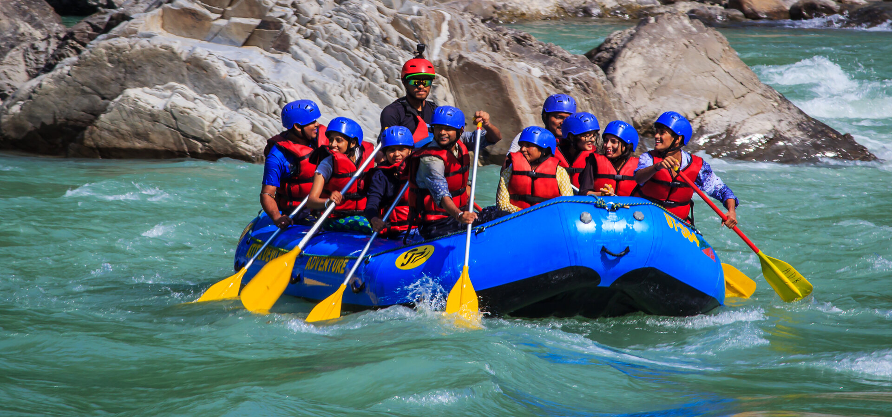
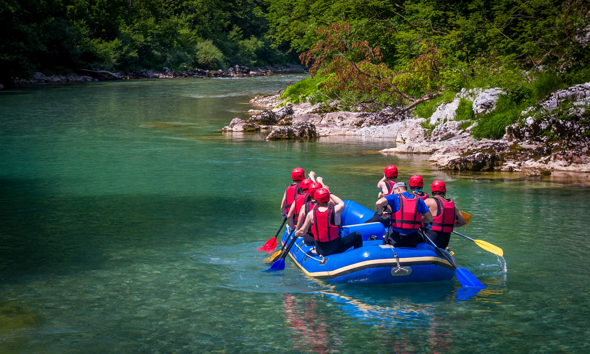
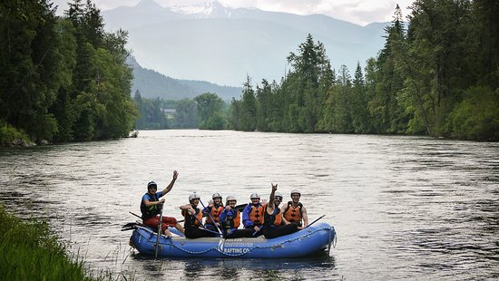

Book a trip
BEST TRIPS TO DATE
White Water Adventure on the Sensunapan River

Destination: Sensunapan, El Salvador.
Duration: 2 days, 1 night
Highlights:
Experience the thrill of navigating through the world-famous rapids of the Colorado River as it carves its way through the majestic Grand Canyon. Encounter adrenaline-pumping rapids such as Hance, Horn Creek, Granite, and Hermit, each offering exhilarating whitewater action and stunning canyon views.
Thrilling Rapids on the chafaltrafa River
Destination: Chafaltrafa Rive, Costa Rica
Duration: 1 day trip
Highlights:
Relax and recharge during calm stretches of the river, where you can swim in crystal-clear pools, admire the scenic landscapes, and enjoy a refreshing picnic lunch on the riverbanks. Conclude your rafting adventure with a scenic drive back to your starting point, reminiscing about the unforgettable moments shared with your fellow rafters and experienced guides.
Wilderness Rafting Expedition on the San Antonio del Monte River
Destination: San Pedro Puxtla, Ahuachapan, El Salvador
Duration: 4 Days, 3 Nights
Highlights:
Embark on a remote wilderness rafting expedition down the pristine waters of the Franklin River, renowned as one of the last true wilderness rivers on Earth and a UNESCO World Heritage site. Challenge yourself with exhilarating Class III and IV rapids as you navigate through narrow gorges, steep drops, and rocky channels, experiencing the raw power and beauty of Tasmania's untamed landscapes.
Adrenaline Rush on the Zambezi River
Destination: Zambezi River, Victoria Falls, Zambia/Zimbabwe
Duration: Half-day trip
Highlights:
Conquer some of the world's most intense rapids, including the infamous "Devil's Toilet Bowl," "The Gnashing Jaws of Death," and "Oblivion," offering heart-pounding drops, massive waves, and exhilarating twists and turns. Experience the adrenaline rush of navigating through the turbulent waters of the Zambezi, with experienced guides providing expert instruction and ensuring your safety throughout the journey.
| River | Time | IDK like profits |
|---|---|---|
| Chafaltrafa River | 1 DAY | |
| Chafaltrafa River | 1 DAY | |
| Chafaltrafa River | 1 DAY | |
| Chafaltrafa River | 1 DAY |